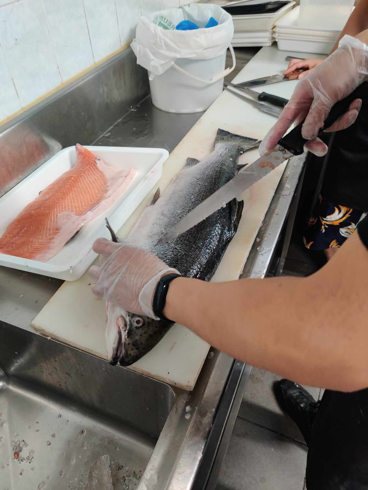

Work Experiences
My first part-time job was at a newly opened Korean fried chicken shop in Box Hill. It was a great experience and I learnt a lot of new skills there as I worked in front of house, before transitioning into the kitchen. Then, I went on to work at Box hill Chatime, a milktea shop. I was able to utilise my mandarin speaking skills, as there were a lot of customers who did not know any english. There were many regulars and I had a couple of friends who worked with me, so it was quite enjoyable. After Chatime, I received my first full-time job offer to work as a customer service advisor at National Australia Bank. I learnt how to work autonomously and achieve daily KPIs, provided customer service in a polite and professional manner, and I gained a great deal of knowledge in how to engage with customers. After almost a year at NAB, I decided to try and follow my parents footsteps in running a small business. Which is what I did for almost 4 years with my partner. It was the most challenging experience I have had, however I would not change it for anything.
